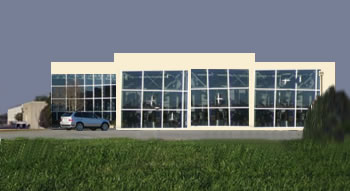

Brasil Maujor Motores
Empresa
A BrasilMaujor Motores é uma empresa do Grupo PowerMotors com sede na Holanda e sua primeira fábrica foi construida no ano de 1965 na cidade de Porto Real que integra o polo industrial Itaguaçu localizado no estado de Santa Catarina na região sul do Brasil.
Ao longo de seus 43 anos de vida firmou liderança no segmento de vendas de motores diesel, destinados a uma vasta gama de aplicações, tendo atingido em 2008 a espetacular marca de 3 milhões de motores fabricados.
Atendendo o mercado nacional e internacional seus motores estão em conformidade com as mais rígidas normas e especificações técnicas, tendo atingido um alto padrão de qualidade, atestado por suas exportações para toda a América Latina, América do Norte, Europa, Oriente Médio e Oceania.
Fabrica
A BrasilMaujor Motores possui três unidades fabris de grande porte estrategicamente localizadas no território nacional e em condições de atender com presteza qualquer demanda do mercado.
- Fabríca Rudolf Diesel
- Situa-se no bairro Industrial de Ubatuba na cidade de Porto Real, SC.
- Primeira unidade construida, fabrica motores leves médios e grandes.
- Número total de funcionários: 1.247.
- Fabríca Martim Afonso
- Situa-se no bairro de Catanduva na cidade de Magorá, SP.
- Unidade construida em 1971, fabrica motores leves e médios.
- Encontra-se em fase de expansão com a construção do módulo para fabricação de motores grandes.
- Número total de funcionários: 794.
- Fabríca Engenheira maria Silva
- Situa-se no bairro de Guaxupé na cidade de Cactus, PE.
- Unidade construida em 1985, fabrica motores leves.
- Número total de funcionários: 278.
 Fabríca Rudolf Diesel
Fabríca Rudolf Diesel- Fabríca Martim Afonso
- Fabríca Engenheira Maria Silva
Copyright ©2008 - BrasilMaujor Motores